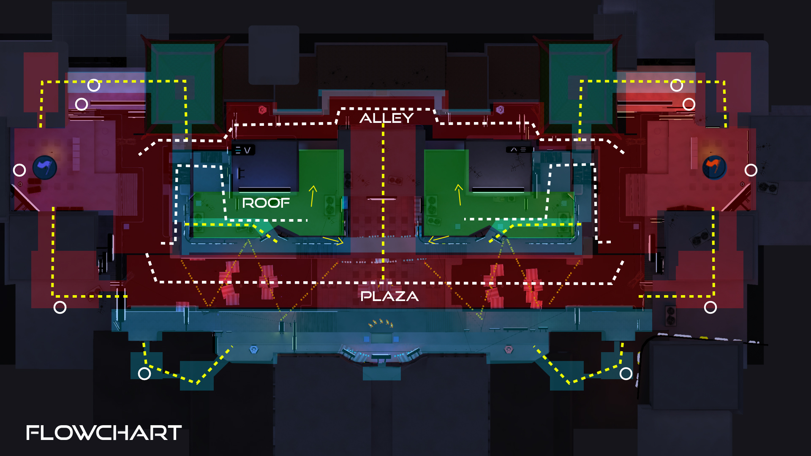

Level Design - neon city 3
January 21, 2019Project Details
-
Game :
Unreal Tournament 2018 -
Map Modes :
CTF - TDM
Neon City 3 is a cyberpunk city level for Unreal Tournament 2018 created by me and Evelyn Petterson (3D Artist). This was part of our Level Design course at Future Games leaded by Linnea Harrison (Neat Corporation). We aimed for a highly impact visuals over a night city. The map is targeted for intermediate and advanced players offering different path possibilities with verticality.
Special Thanks to 2D Artists: Angelika Przybyl, Emanuel Axelsson, Gustaf Hammerth, Mariana Salimena, Beatrice Karlsson
This course was intended to understand what constitutes a good environment in a game production, how audiovisual effects affect the experience in computer games, how environments are effectively visualized and learn how to write a level design document, as well as communicating game design effectively. Combined with the 3D class, each team (1 Designer and 1 3D Artist) created a CTF map for Unreal Tournament 2018 game. Designers were supposed to focus on the gameplay experience, creating a map layout that engages the players in a balanced combat.
For us it easy to define our theme, I was looking to design an urban/city map and Evelyn wanted to try hard surface models and shaders, so we decided going for this cyberpunk night mood city full of neon's. We got inspiration from ¨Altered Carbon¨, ¨Blade Runner¨ and Lijiang City.
From the design perspective, I chose to create a map targeting intermediate and advanced players, focusing in a medium/short range combat and creating different ways to navigate. One of my challenges was to create a map that fits the symmetric rule but still creating the illusion that its not a symmetric level and still enabling players to take different routes and experience different playstyles. So, I opt in creating a map with 3 main routes and added 3 levels of verticality.
- 
The Level was organized in 4 different areas:
-Flag Base: Transits from tension to high tempo, players can escape quickusing interiors routes
-Alley: Its the shortest route, my intention in this area is to create a challenge and dangerous path for the players, there isn't pickups and the player can be highly exposed when crossing there.
-Roofs: The roofs are intermediate routes, it can be used as high ground advantage point but its hard once it has objects such as fans, antennas and neon’s. My intention with the roofs is to create multiple possibilities to cross over different areas and create strategies.
-Plaza Market: The longest path, the area where the player can "buy ammunition" it contains most of the map pickups giving the player a better reward when going that way.In general, the map invokes high tension, creating strategic medium short combats.
It was 5 intense weeks of blocking out, playtesting and making sure our workflow was matching the schedule. Check the final results below and if you want to discuss more about this project feel free to chat here.

Also would like to thanks Tilmann Milde for his awesome lightening lecture on this course! For those interested in improving your lightening skills check out his channel Lightening Academy. It is mindblowing!!!!!